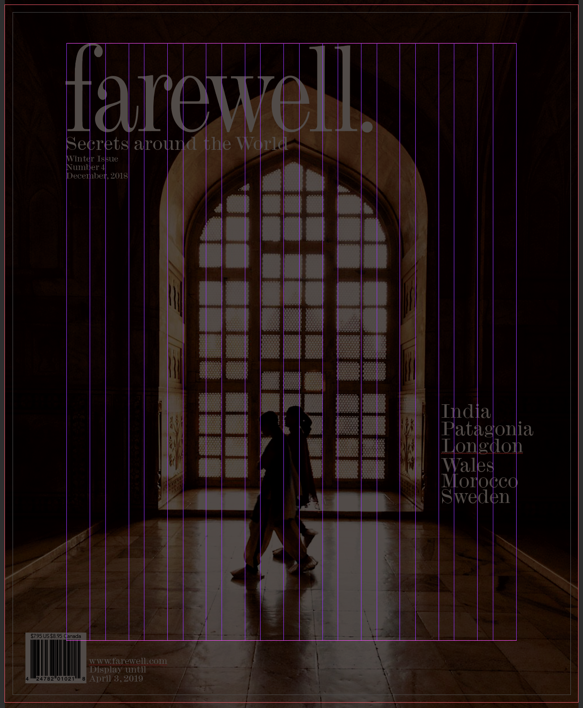
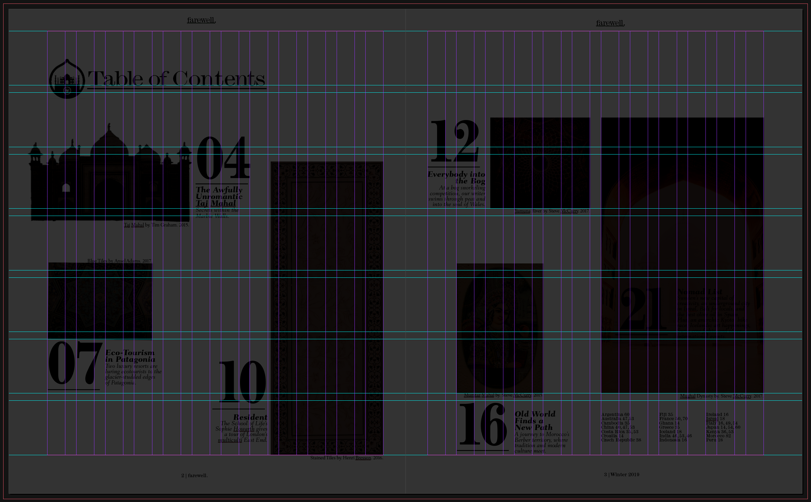
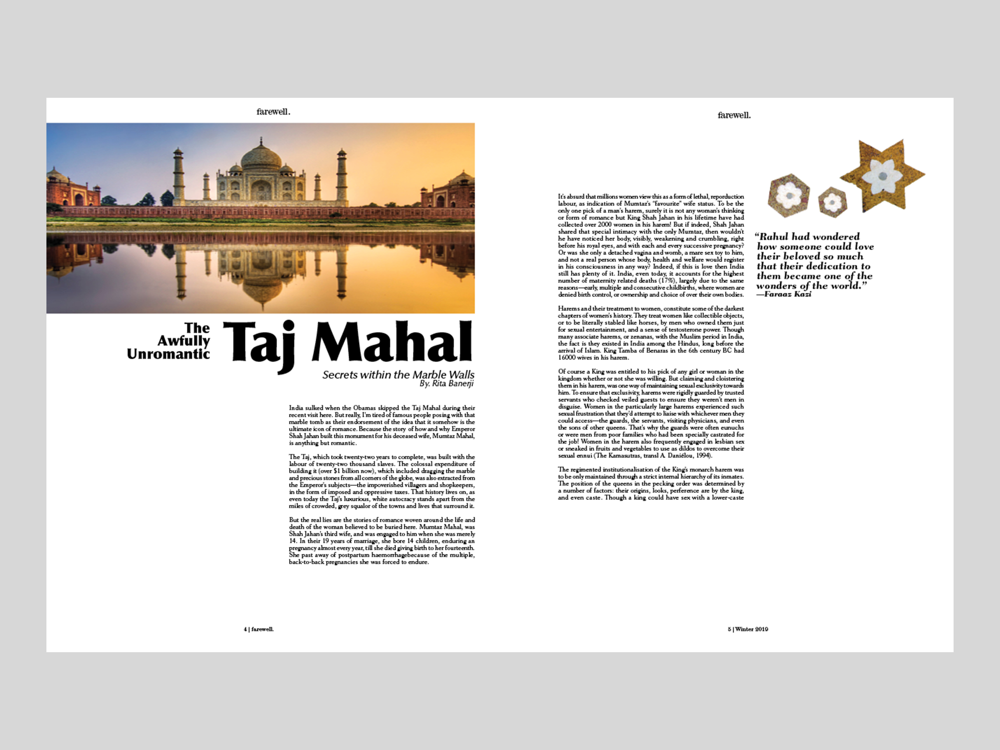
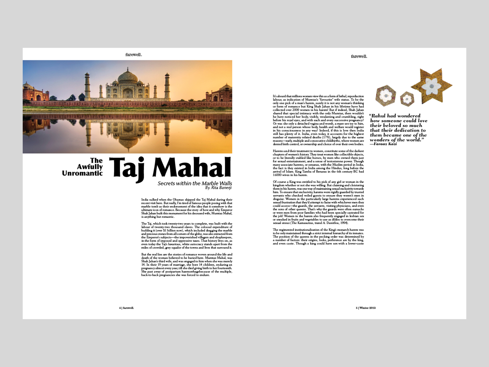

.farewell
Description of the Project
The objective was to create a magazine that included: a cover, table of contents, and the interior article. Learning typefaces along with their appropriate pairings and imagery layouts.
Design decisions included: typography, grid systems, and hierarchy.
Client: .farewell
Service: Print
Tools: Photoshop, and Indesign

MAGAZINE
This months featured article is all about "The Awefully Unromantic Taj Mahal".



GRID
These are the grids that I used for the cover, table of contents, and body copy.
TABLE OF CONTENTS

ARTICLES


SPEADS

 
